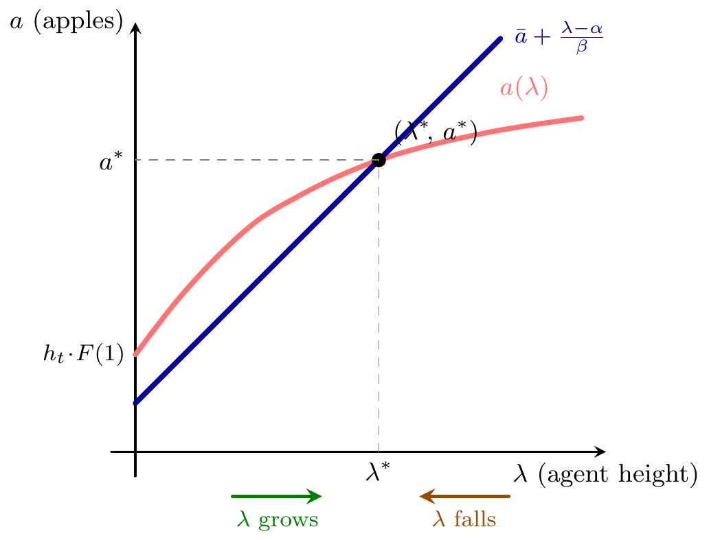
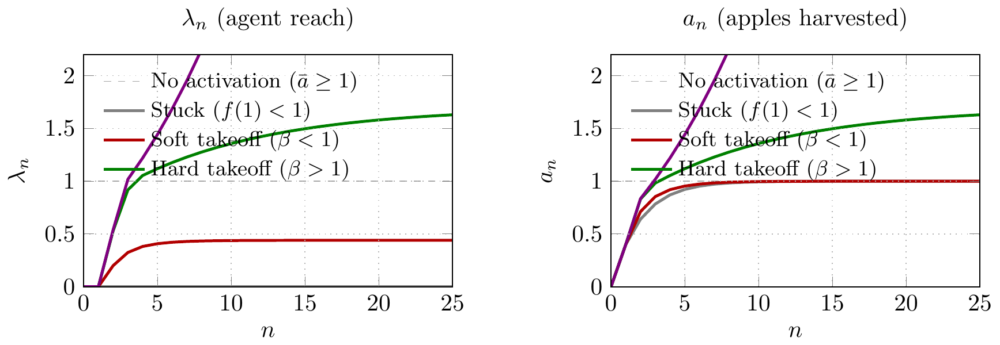
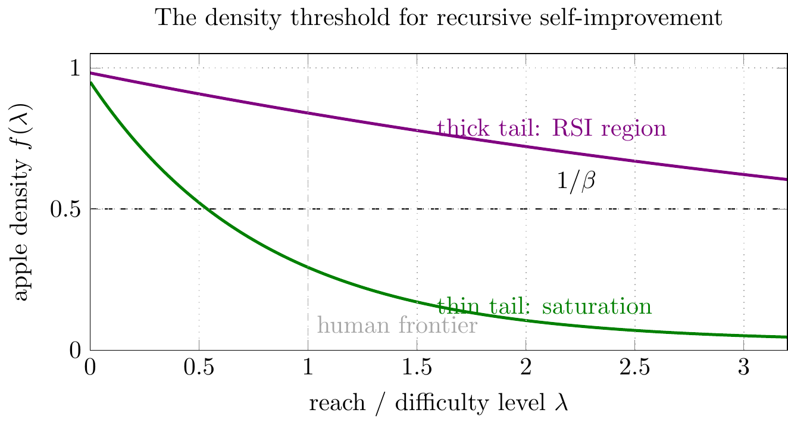

- Start with the simplest model of AI progress:
-
- There is a fixed mapping from training expenditure to general-purpose model intelligence.
- Training expenditure has been increasing by ≈5X per year.
- Training efficiency has been increasing by ≈5X per year due to R&D.[^estimates]
We can draw this as follows:
Humans have been painstakingly pushing those blue curves to the left. We now are seeing clear signs of agents joining the effort and contributing to that leftward movement, and we want to know what to expect.
- Observations.
-
The figure below shows the equilibrium, holding \(h_t\) fixed. The red curve shows total apples harvested as a function of agent height. The blue line shows the apples needed to sustain a given height (from inverting the self-improvement equation at steady state: \(a = \bar{a}+(\lambda-\alpha)/\beta\)). Where the curve is above the line, surplus apples drive \(\lambda\) upward; where below, the deficit pulls it back. The equilibrium is at the intersection.

–>
<!–

Conditions
- Agents contributing to AI research.
- With \(\lambda_n = 0\), \(a_n = h_n \to 1\). So the agent can ever turn on iff \(\bar{a} < 1\). If \(\bar{a} \ge 1\), \(\lambda_n \equiv 0\) forever. Activation-time approximation: \(h_n = 1 - p^n \ge \bar{a}\) \(\Leftrightarrow\) \(n \ge \ln(1-\bar{a})/\ln p\); \(p\) mainly shifts when activation happens.
- Getting to superhuman AI research.
-
As \(n \to \infty\), \(h_n \to 1\). If \(\lambda_n < 1\), \(a_n \to 1\); if \(\lambda_n \ge 1\), \(a_n = \lambda_n\). So asymptotically \(\lambda_{n+1} \to f(1)\) with \(f(1) = 0\) if \(1 < \bar{a}\), and \(f(1) = \alpha + \beta(1-\bar{a})\) if \(1 \ge \bar{a}\). So takeoff past human level (eventually \(\lambda_n > 1\)) iff \[\boxed{\alpha + \beta(1-\bar{a}) > 1.}\]
Interpretation: “If the orchard were fully human-level (\(a=1\)), would the next agent be at least human-level?” If not, the system stays below 1. This condition is essentially independent of \(p\).
- Self-sustaining AI research.
-
For \(\lambda_n \ge 1\), \(a_n = \lambda_n\) and \[\lambda_{n+1} = \alpha + \beta(\lambda_n - \bar{a}).\]
Runaway / hard takeoff iff \(\boxed{\beta > 1}\) (roughly geometric growth in \(\lambda_n\)).
Soft takeoff / saturation iff \(\boxed{\beta < 1}\): convergence to \[\lambda^* = \frac{\alpha - \beta\bar{a}}{1-\beta}\] (provided the system crosses 1 first).
Knife-edge \(\beta = 1\): linear growth.

Variation: Non-uniform apple density
- Now let the tree have a general shape.
-
Suppose apples have density \(f(x)\) over heights \(x \ge 0\), with cumulative mass \[F(\lambda) \equiv \int_0^\lambda f(x)\,dx,\] normalized so that \(F(1)=1\). This keeps the interpretation that a human can reach one unit of cumulative progress, but allows the orchard to be bottom-heavy or top-heavy above that point.
The apples harvested by period \(n\) are now \[a_n = F(\lambda_n) + \big(1-F(\lambda_n)\big)_+\,h_n.\]
This is the same logic as before: the agent gets everything below its reach, while humans contribute a fraction \(h_n\) of the remaining human-reachable mass.
- Implications.
-
The conditions for turning on and for crossing the human frontier are unchanged:
- The agent can activate iff \(\bar a < 1\).
- The agent eventually gets past human level iff \[\alpha + \beta(1-\bar a) > 1.\]
The reason is that below human level only the total mass up to height \(1\) matters, and we normalized that mass to 1.
- Above human level, the shape of the tree matters.
-
Once \(\lambda_n \ge 1\), humans no longer contribute and the dynamics become \[\lambda_{n+1} = \alpha + \beta\big(F(\lambda_n)-\bar a\big).\]
The local gain from an extra bit of reach is therefore \[\frac{d\lambda_{n+1}}{d\lambda_n} = \beta f(\lambda_n).\]
So there is a simple density threshold: \[\boxed{\text{local RSI at height }\lambda \text{ iff } \beta f(\lambda) > 1 \iff f(\lambda) > 1/\beta.}\]
Interpretation: an extra unit of reach at height \(\lambda\) exposes about \(f(\lambda)\) extra apples, which in turn generate \(\beta f(\lambda)\) extra reach next period. If that amplification factor exceeds 1, improvements compound rather than dying out.
A stronger condition for sustained unbounded takeoff is that for sufficiently large \(\lambda\), \[\alpha + \beta\big(F(\lambda)-\bar a\big) > \lambda.\] But the density threshold \(f(\lambda)>1/\beta\) is the clean local criterion: it tells us where the orchard is dense enough for recursive improvement to reinforce itself.
This suggests a concrete empirical question: how dense are the “high apples” in AI R&D? If hard ideas remain dense enough above the current frontier, then crossing human level could quickly become self-reinforcing. If density falls off fast with height, we should expect saturation instead.
